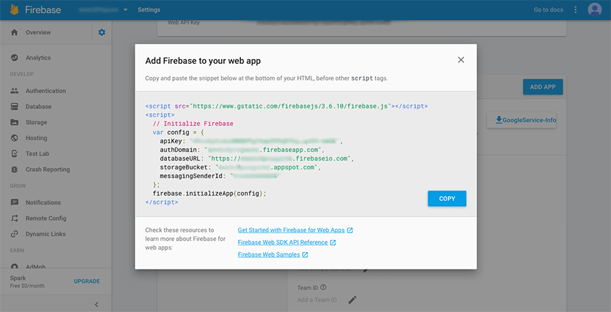

Step 2: Setting up the Application Files
- Firebase Introduction and Setup
- Setting up Firebase on the Front End
- Setting up Firebase on the Back End
- Ionic Setup
In this step, we’re going to set up all the database information and making the IDs of your applications unique. To do that, we’re going to use the firebase project and the app IDs we generated in the last step. We’ll do the Firebase side first, as there are more steps to it, with different sets of steps for each side of the application.
Firstly, go in to the Firebase project we created, and click the Add Firebase to your Web app option.
This will then present you with the following data. We’ll need this in a moment, so you should keep this window
open in your browser while we work through the next steps.

Next, head in to the Authentication tab, and Enable Email/Password sign-in.
Then head to the Database tab and press the Import JSON file, and import the sampledata.JSON file provided in the project folder.
This is some temporary data to initialise the database. You can edit all of this later.
Next, we’ll import the Firebase Data from earlier in the step in to the right files.
You’ll need a text editor to do this, and I can recommend Notepad++. Open the frontend folder,
and head in to the www folder. Open up the Index.html file in your text editor. Find the section that looks like this, that says “Intialize Firebase”.
Replace the areas that say YOUR DATABASE HERE with the data that came from the Firebase project we created at the start of this step.
Next, We need to initialise the tables for access in the application. Go in to the js folder,
and open up the Services file in your text editor. At the top you’ll see a set of references. Replace the url sections that say
YOUR DATABASE HERE with the database url from our firebase data, but don’t change the ends of these statements as these are required to
use the tables in the application!
Next, head in to the business application folder,
head in to the src folder, and within that, the app folder.
Open the app.module.ts file in your text editor, and scroll down to the firebaseConfig that looks like this.
As before, change any YOUR DATABASE HERE data to the data provided by the Firebase Project we created earlier.
Lastly, You’ll need to open both of the Ionic.config.JSON files,
found in the top level of both of the application folders. In these,
Use your app IDs and App names we generated earlier in the YOUR APP HERE sections,
using the respective names you gave the two applications and their IDs.